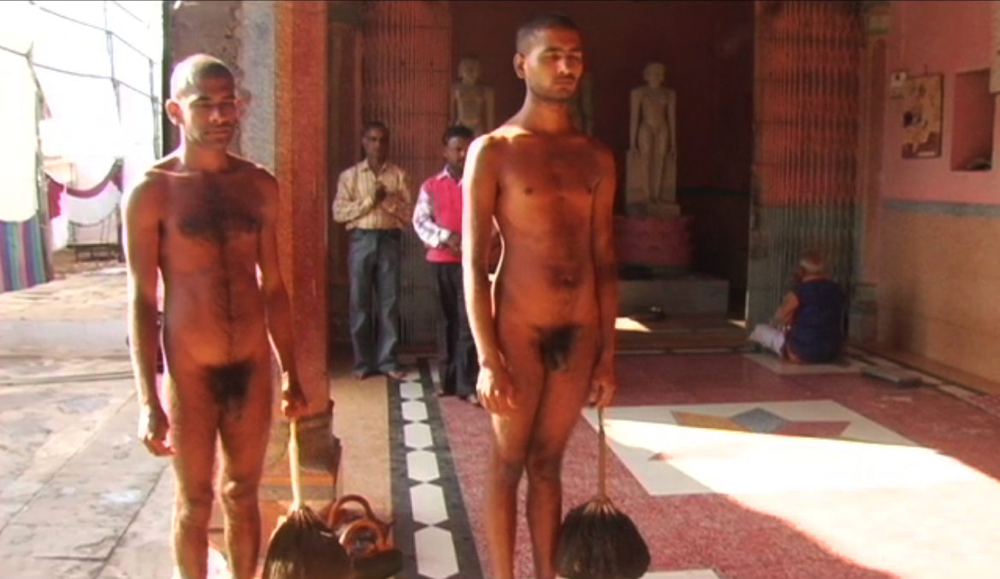

|
Diksha - Trailer
Produced by: Manjusha Films
Director/Camera/Editor: Hemal Trivedi
Location: India
Year: In production
Length: 3:58
Diksha profiles a 76-year-old naked Jain monk as he teaches his
students the secrets of the ancient science of attaining Nirvana.
The filmmaker Hemal Trivedi spent months in the forests of India with
the naked monks to learn about their esoteric sub-culture.
|